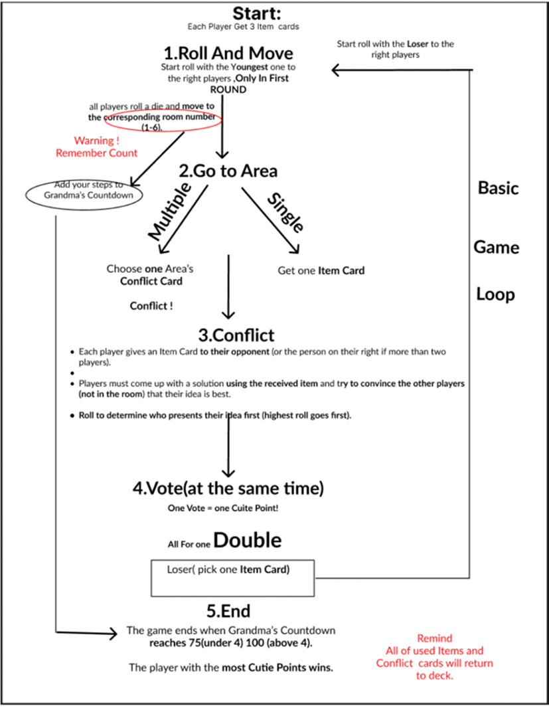

P U R R - S U A S I O N
Purr-suation was selected for the SFU SIAT Project Gallery and featured on the SFU Showcase webpages.
Purr-suation is a 4-6 player party-style board game where players take on the roles of cats competing to solve household problems in Grandma's house. The game centers around creative conflict resolution: when multiple players land in the same room, they must use Item Cards given by their opponents to craft absurd solutions to household problems, then convince non-involved players to vote for their idea.


The game's core appeal lies in its People Fun mechanics—forcing players to engage socially through persuasion, voting, and creative problem-solving. Each dice roll moves players between six distinct rooms, and the accumulation of all dice rolls creates a countdown timer (75 for 4 players, 100 for 5-6 players) signaling Grandma's return. The player with the most Cutie Points when Grandma arrives wins.
I served as the Game Systems Designer, responsible for designing the complete gameplay architecture from win/loss conditions to system integration. My work encompassed defining how all mechanics interconnect—the conflict resolution system, voting mechanics, item card distribution, and the countdown timer—to create a cohesive experience that prioritizes social interaction and creative chaos.
A key contribution was designing the Basic Game Loop, which structures each round: players roll dice to move to rooms (1-6), triggering either solo actions (drawing item cards) or conflicts when multiple players land together. In conflicts, players exchange item cards, draw room-specific conflict cards, create solutions using the opponent's given item, and persuade non-involved players to vote. The loop ensures continuous engagement by making solo players active participants in voting, preventing disengagement.

Figure 03. Basic Game Loop - Core interaction flow I designedI designed each card's unique mechanical effect to create meaningful choices and prevent obvious decisions. Every Item Card and Event Card was crafted to contribute to the game's chaotic, creative atmosphere while maintaining strategic depth. The voting system—where unanimous votes award double points—creates social dynamics that reward both creativity and persuasion skills.
Win/Loss System: I designed the victory condition around Cutie Points accumulation, with the countdown timer (Grandma's return) creating urgency. The threshold scales with player count (75 for <4 players, 100 for 4+ players) to balance game length. This system ensures games last 30-40 minutes while maintaining tension as the countdown approaches.
Conflict Resolution System: When players land in the same room, they enter a conflict phase. I designed this to require players to give an Item Card to their opponent, who must use it in their solution—creating the core challenge of using mismatched items creatively. The system ensures both players are engaged: the giver strategically chooses a difficult item, while the receiver must find creative ways to incorporate it.
I designed room-specific Event Cards for each of the six rooms (kitchen, bedroom, bathroom, living room, etc.), each containing absurd and nonsensical household problems that players must solve. These event cards are deliberately ridiculous—from broken vases to mysterious stains to neighbor complaints—creating scenarios where players must use completely unrelated items to craft creative solutions. The mismatch between room context, event problem, and given item card drives the game's humor and creative challenge, ensuring every conflict feels unique and unpredictable.
 Figure 04. Event Card Design example
Figure 04. Event Card Design example
Voting & Scoring System: Non-involved players vote simultaneously to avoid bias. Each vote equals 1 Cutie Point, but if all voters choose the same player, that player receives double points—rewarding exceptional creativity and persuasion. The loser draws a new Item Card, maintaining hand size and future opportunities.
Item Card System: I designed all 50 Item Cards with unique, often absurd objects (HDMI cables, hammers, bananas) that create humorous mismatches with conflict scenarios. Each card's effect is its inherent challenge—forcing creative problem-solving rather than providing obvious solutions. The system ensures players start with 3 cards, can gain cards when alone or after losing conflicts, and must discard used cards back into the deck.
 Figure 05. Item Card Design example
Figure 05. Item Card Design example
Countdown Integration: Every dice roll adds to Grandma's Countdown, creating a shared resource that all players contribute to. This mechanic ensures every action has weight and prevents players from stalling. The integration of movement, conflict, and timer creates a dynamic pacing where players must balance gathering points with managing the game's end condition.
This project demonstrated the importance of systemic thinking in game design. Designing the complete gameplay architecture required understanding how each mechanic influences player behavior and social dynamics. The game loop I created ensures continuous engagement by making every player an active participant—even when not in conflict, players vote and influence outcomes.
The iterative process revealed that simplicity and clarity are essential for People Fun. Early iterations included character perks and complex item creation mechanics that overcomplicated the core experience. By focusing on the essential loop—conflict, persuasion, voting—the game achieved its goal of fostering social interaction and creative chaos.
Designing unique card effects taught me that constraints drive creativity. The mismatched item-card-to-conflict system forces players to think creatively, turning potential frustration into humor and engagement. This experience strengthened my ability to design systems where mechanics serve both gameplay function and player experience goals.